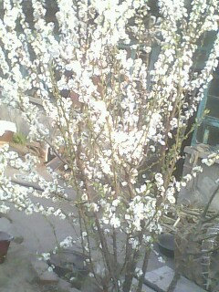
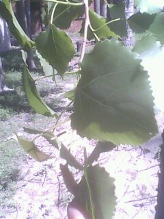

乡村的春天
#1 乡村的春天作者：蓝天蓝 发表时间：2011-4-14 7:11:03
乡村的春天
春天来了，冬眠的大地也睡醒了，这会姗姗来迟的春风送走了
不肯隐退的最后一片枯黄的叶子，迎来了万物，使一切变得生机勃勃。
我家窗前的樱桃花开的雪一样白，村旁的柳枝返青变绿变柔，
杨树娇媚的嫩芽撩拨灿烂的阳光。
大片的麦田绿油油的新鲜而又充满灵气，使空气都变得清亮天润。
我静静的漫步在乡间的小路上，心中有一种旭日出生的朝气。
昔日苦海的小草也复苏了，放眼望去，除了满眼的青翠欲滴的绿色，
就是宁静的天空出现的雷雨，这雷雨出现的太及时了。
村里的人都在忙，或整地，或选种，或送粪...有的人去种花生了，
步履匆匆的走在春的气息之中。
春天，乡村四季中最丰润的一道风景，斑斓而且又多姿，欢乐而且祥和。
因为有了春天，所有绿色的枝枝叶叶花花蔓蔓，
才能变得生机勃勃，农民才有了播种的希望，才能有丰收的喜悦。
乡村的春天将永远是一个年轻而且富有光泽韵味的春天，
明媚的阳光照耀着大地，为乡村的春天增添了一道亮丽的风景线，
有了小草，花朵，柳条，杨树枝的衬托，使乡村的大地变得更加艳丽多姿。
乡村的美景大概也只有农民能够领略其中......
［ 茗弈宽容 于 2011-4-14 11:11:20 时花20金币送鲜花一朵］
［ 被感动的人 于 2011-4-14 17:50:24 时花20金币送鲜花一朵］
［ 被感动的人 于 2011-4-14 17:50:32 时奖励此帖[金币加 100 威望加1］

［此帖子已被 被感动的人 在 2011-4-15 20:03:48 编辑过］
#2 Re:乡村的春天作者：茗弈宽容 发表时间：2011-4-14 11:12:34
闻到稻田的香味了。［ 被感动的人 于 2011-4-14 17:50:11 时花20金币送鲜花一朵］
#3 Re:乡村的春天作者：蓝天蓝 发表时间：2011-4-14 12:49:31
本来还有配图的，可惜我不会上传#4 Re:乡村的春天作者：被感动的人 发表时间：2011-4-18 7:37:44
这个时候杨树是最美丽的。不同于春柳最初的黄嫩现在的老气，也不同于玉兰的静谧的满树热情。杨树的叶子比核桃略大，是一种水嫩得恰到好处、清新得恰到好处、成熟得恰到好处、浓淡也恰到好处的绿，油亮亮地光滑，聚成一家家，再站成一排排、组成一阵阵。早起的风相较于这样的青春还是硬了些，阳光就在叶子上“哗啦啦”地响，就像我们20岁左右的青春，无论单看还是融入群体，永远张扬着专属的活力。［ 蓝天蓝 于 2011-4-18 8:04:40 时花20金币送鲜花一朵］
#5 Re:Re:乡村的春天作者：蓝天蓝 发表时间：2011-4-19 12:31:30
引用：
原文由 被感动的人 发表于 2011-4-18 7:37:44 :
这个时候杨树是最美丽的。不同于春柳最初的黄嫩现在的老气，也不同于玉兰的静谧的满树热情。杨树的叶子比核桃略大，是一种水嫩得恰到好处、清新得恰到好处、成熟得恰到好处、浓淡也恰到好处的绿，油亮亮地光滑，聚成一家家，再站成一排排、组成一阵阵。早起的风相较于这样的青春还是硬了些，阳光就在叶子上“哗啦啦”地响，就像我们20岁左右的青春，无论单看还是融入群体，永远张扬着专属的活力。［ 蓝天蓝 于 2011-4-18 8:04:40 时花20金币送鲜花一朵］
配上杨树的图片，就是图片效果不好，离得有点远


［此帖子已被 蓝天蓝 在 2011-4-19 12:38:10 编辑过］
［ 被感动的人 于 2011-4-19 19:28:05 时花20金币送鲜花一朵］
#6 Re:乡村的春天作者：被感动的人 发表时间：2011-4-19 19:27:41
谢谢谢谢。
挺有感觉的。我看见的杨树不是这种，叶子比这种要圆一些，用眼看的话比照片要水润得多。好像我印象里这种叶子的杨树滋润度不如那种好，不全是相机的问题。
［此帖子已被 被感动的人 在 2011-4-19 19:27:56 编辑过］
#7 Re:乡村的春天作者：蓝天蓝 发表时间：2011-4-19 19:53:20
你说的这种杨树，我们这里也有，只是现在叶子还没有长出来，刚刚才落头，等过几天叶子大了，我再照几张给你看看#8 Re:乡村的春天作者：被感动的人 发表时间：2011-4-19 19:54:55
好啊好啊~
#9 Re:乡村的春天作者：蓝天蓝 发表时间：2011-5-3 10:04:02
又照了几张杨树的照片，不知道有没有你说的哪种？

［此帖子已被 蓝天蓝 在 2011-5-3 10:12:02 编辑过］
［ 被感动的人 于 2011-5-3 18:44:36 时花20金币送鲜花一朵］
#10 Re:Re:乡村的春天作者：被感动的人 发表时间：2011-5-3 18:44:21
引用：这三张是~ 很喜欢这种挺拔昂扬的感觉，谢谢姐姐~
原文由 蓝天蓝 发表于 2011-5-3 10:04:02 :又照了几张杨树的照片，不知道有没有你说的哪种？
［此帖子已被 蓝天蓝 在 2011-5-3 10:12:02 编辑过］
#11 Re:乡村的春天作者：被感动的人 发表时间：2011-5-3 18:47:03
尤其喜欢第一张和第三张，第一张很有我那天早上看见的那种感觉。#12 Re:乡村的春天作者：蓝天蓝 发表时间：2011-5-3 18:57:51
今天特意照的，在别的村，第一张是开车在行驶的时候照的，感觉还是不错吧